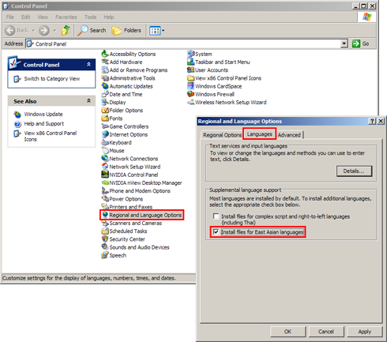

Installing fonts for East Asian languages
If you frequently play Chinese, Japanese or Korean routes, it might be worth installing fonts to properly display those languages. If no suitable fonts are available, you might see substitution characters such as boxes.
On Windows XP, go to Control Panel, then open Regional and Language Options, click on the Languages tab, and select Install files for East Asian languages, then confirm via OK.
